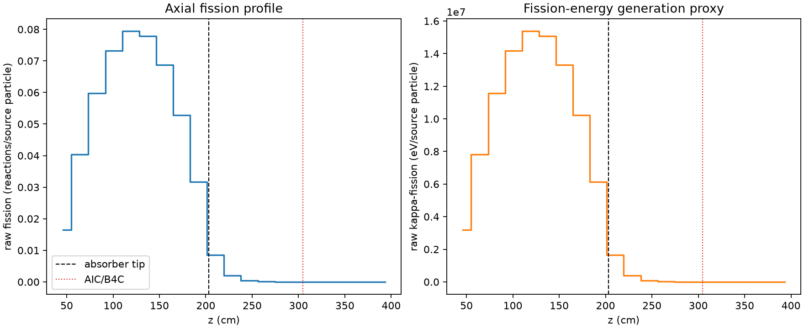
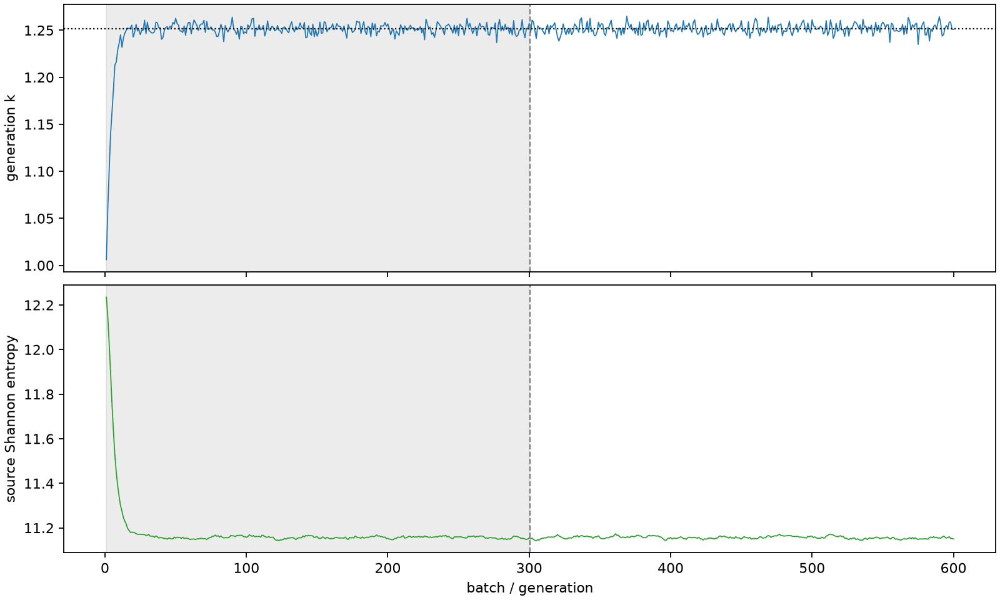

| field | value |
|---|---|
| experiment | V2-STAGE_32_OGRENCI_02-0002 |
| k | 1.2517780849592905 |
| MC standard error | 0.00018774571798819528 |
| seconds | 1157.879303653 |
| acceptance | not_assessed |
| convergence | review_required |
Completed is output integrity only; physical and statistical review required. Zero tallies do not prove zero production or zero uncertainty.
| diagnostic | value |
|---|---|
| geometric fuel voxels | 5280 |
| zero fission tally voxels | 741 |
| low signal fuel voxels | 1850 |
| low signal fission share | 8.689453733434214e-05 |
| low signal kappa share | 8.69189800889972e-05 |
| important fission share | 0.9500517387383492 |
| previous filter included | 3430 |
| duration estimate s | 1562.5173488400023 |
| actual minus estimate s | -404.63804518700226 |
| fission relative MC error | statistics |
|---|---|
| all_geometric_fuel | {"voxels": 5280, "positive_mean_voxels": 4539, "zero_mean_voxels": 741, "undefined_relative_error_voxels": 741, "median": 0.013911099763518026, "p95": 0.9732453922188575, "maximum": 1.0000000000000002} |
| low_signal | {"voxels": 1850, "positive_mean_voxels": 1109, "zero_mean_voxels": 741, "undefined_relative_error_voxels": 741, "median": 0.601837306037686, "p95": 1.0, "maximum": 1.0000000000000002} |
| important_95pct | {"voxels": 2143, "positive_mean_voxels": 2143, "zero_mean_voxels": 0, "undefined_relative_error_voxels": 0, "median": 0.007157292188502381, "p95": 0.010298258889249503, "maximum": 0.014191797315231722} |
| outside_previous_filter | {"voxels": 1850, "positive_mean_voxels": 1109, "zero_mean_voxels": 741, "undefined_relative_error_voxels": 741, "median": 0.601837306037686, "p95": 1.0, "maximum": 1.0000000000000002} |
| kappa_fission relative MC error | statistics |
|---|---|
| all_geometric_fuel | {"voxels": 5280, "positive_mean_voxels": 4539, "zero_mean_voxels": 741, "undefined_relative_error_voxels": 741, "median": 0.013897959117065112, "p95": 0.973258925021414, "maximum": 1.0000000000000002} |
| low_signal | {"voxels": 1850, "positive_mean_voxels": 1109, "zero_mean_voxels": 741, "undefined_relative_error_voxels": 741, "median": 0.6003868809814232, "p95": 1.0, "maximum": 1.0000000000000002} |
| important_95pct | {"voxels": 2143, "positive_mean_voxels": 2143, "zero_mean_voxels": 0, "undefined_relative_error_voxels": 0, "median": 0.007148883215109426, "p95": 0.010286699813829072, "maximum": 0.014176133905469438} |
| outside_previous_filter | {"voxels": 1850, "positive_mean_voxels": 1109, "zero_mean_voxels": 741, "undefined_relative_error_voxels": 741, "median": 0.6003868809814232, "p95": 1.0, "maximum": 1.0000000000000002} |
| axial bin | fission share | kappa-fission share |
|---|---|---|
| 1 | 0.03211455566497735 | 0.032115829407776 |
| 2 | 0.07889830154212471 | 0.07889773154611697 |
| 3 | 0.11679479926647497 | 0.11679398849028105 |
| 4 | 0.14328597075551402 | 0.14328469539924515 |
| 5 | 0.1552797584352255 | 0.15527868480004442 |
| 6 | 0.15216089548710995 | 0.15215965477557522 |
| 7 | 0.13434185532406775 | 0.13434092605954057 |
| 8 | 0.10332394443394953 | 0.10332313212468211 |
| 9 | 0.06200616492325321 | 0.06200602123168272 |
| 10 | 0.016659214419014835 | 0.016663121477750172 |
| 11 | 0.0038391778440850237 | 0.0038404166926549123 |
| 12 | 0.0009622884666292659 | 0.0009626177906870482 |
| 13 | 0.00024749201637215486 | 0.00024757505441879254 |
| 14 | 6.46585600272712e-05 | 6.467443712253226e-05 |
| 15 | 1.6837707603962832e-05 | 1.6842076407262908e-05 |
| 16 | 2.7327285621485164e-06 | 2.735754976976448e-06 |
| 17 | 9.914170693552561e-07 | 9.91526498506001e-07 |
| 18 | 3.190929380646108e-07 | 3.1947006050843676e-07 |
| 19 | 4.1915000955573035e-08 | 4.188447909403148e-08 |
| 20 | 0.0 | 0.0 |
Histories include the inactive-to-active transition at batch 300. kappa-fission approximates fission energy production, not total heat deposition.

